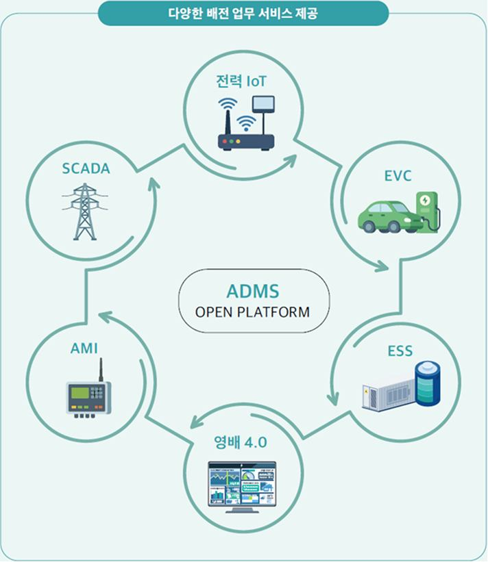
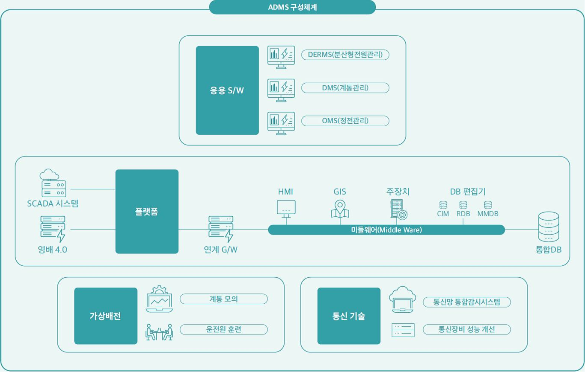

3줄 요약
- ADMS는 현장 데이터로 배전계통 상태를 파악하고, 계통해석으로 운영자의 판단을 돕고, 출력제어·고장 복구 같은 조치까지 잇는 배전망 통합운영 플랫폼이다.
- 한전은 2017~2021년 자체 기술로 ADMS를 개발해 2022~2024년 전국 15개 본부에 구축을 마쳤다.
- 다음 단계는 사내 시스템 연계와 AI 예측으로, 분산에너지와 유연자원을 아우르며 미래의 계통을 미리 준비하는 것이다.
ESS, 전기차, 마이크로그리드 등 다양한 분산에너지 자원이 배전계통 곳곳에 연결되면서 전력의 생산과 소비 방식은 갈수록 다양해지고 있다. 전기의 흐름이 복잡해질수록 이를 안정적으로 운영하기 위해서는 계통을 정확하게 보고, 판단하고, 필요한 조치를 수행하는 능력이 중요해진다.
한전이 개발한 ADMS(Advanced Distribution Management System), 배전망 통합운영 플랫폼은 바로 이러한 변화에 대응하기 위한 배전계통 운영의 핵심 시스템이다. ADMS는 단순히 계통을 보여주는 시스템이 아니다. 현장의 데이터를 바탕으로 계통의 상태를 파악하고, 다양한 계통해석을 통해 운영자의 판단을 지원하며, 필요한 제어와 운영 업무로 이어질 수 있도록 한다.
보이지 않는 전기의 흐름을 읽는 눈에서 시작해, 그 흐름을 판단하고 움직이는 것. 한전의 ADMS는 그렇게 배전계통 운영의 새로운 시대를 열었다.
전기의 흐름을 보다
배전계통을 안정적으로 운영하기 위한 첫걸음은 현재의 계통 상태를 정확하게 파악하는 것이다. 과거 배전계통 운영에서 자동화 시스템의 도입은 큰 변화를 가져왔다. 현장 설비의 상태를 원격으로 확인하고 필요한 조작을 수행할 수 있게 되면서 배전계통 운영의 신속성과 효율성이 크게 향상됐다.
하지만 전력산업의 환경은 계속 변화했다. 특히 재생에너지의 확대는 배전계통 운영에 새로운 과제를 던졌다. 과거와 달리 배전계통 곳곳에서 전력을 생산하는 분산에너지 자원이 늘어나면서 전력의 흐름이 달라질 수 있게 됐기 때문이다.
이제 운영자는 단순히 어느 설비가 동작하고 있는지를 확인하는 것을 넘어 전압과 전류는 어떤 상태인지, 전력은 어느 방향으로 흐르고 있는지, 발전량과 부하량은 어떻게 변화하고 있는지를 함께 살펴봐야 한다. ADMS는 현장에서 취득되는 다양한 데이터를 활용해 이러한 계통의 상태를 종합적으로 파악한다. 계측된 전압과 전류, 전력 흐름 등의 정보를 분석하고, 직접 계측되지 않는 분산에너지의 발전량을 추정해 계통 운영에 필요한 정보를 제공한다. 서로 흩어져 있던 데이터를 계통이라는 하나의 관점에서 바라볼 수 있게 한다.
보이지 않는 전기를 직접 볼 수는 없지만, 데이터라는 새로운 감각을 통해 그 흐름을 읽어내는 것이다.
보고, 판단하다
ADMS의 진정한 가치는 계통을 ‘보는 것’에서 끝나지 않는다. 계통에서 어떤 현상이 나타났을 때 중요한 것은 그 현상이 발생했다는 사실을 아는 것뿐만 아니라, 왜 발생했는지 그리고 어떻게 대응할 것인지 판단하는 것이다.
ADMS는 다양한 계통해석 기능을 통해 이러한 판단을 지원한다. 예를 들어 재생에너지 발전량이 증가하면 특정 지역의 전압이 높아지거나 전력의 흐름이 달라질 수 있다. 특정 선로에 전력이 집중되면서 과부하가 발생할 가능성도 있다. 이때 ADMS는 계통의 상태와 발전·부하 정보를 종합적으로 분석해 변화가 계통에 미치는 영향을 살펴볼 수 있다.
재생에너지 연계가 증가할수록 이러한 계통해석의 중요성은 더욱 커진다. 새로운 발전원이 연결됐을 때 기존 계통에 어떤 영향을 미치는지 미리 검토하고, 현재 계통이 어느 정도의 재생에너지를 수용할 수 있는지도 판단해야 하기 때문이다. ADMS는 실제 배전계통에서 축적된 부하와 발전 데이터를 활용해 선로별 재생에너지 수용능력을 평가하고, 계통의 운전방식을 어떻게 구성하면 보다 효율적으로 재생에너지를 받아들일 수 있는지도 검토할 수 있다.
결국 ADMS는 단순한 감시 시스템이 아니라 계통을 분석하고 운영자의 판단을 뒷받침하는 지능형 시스템으로 기능한다.
판단에서 행동으로
계통운영에서 ‘판단’은 그 자체로 끝나지 않는다. 필요한 조치로 이어져야 비로소 의미가 있다. 재생에너지의 급격한 발전으로 배전계통의 전압이나 전력 흐름에 변화가 발생하는 경우에는 발전설비의 출력을 조정하는 등 계통을 안정적으로 운영하기 위한 조치가 필요할 수 있다. ADMS는 이러한 계통 상황을 분석하고 필요한 출력제어 정보를 제공함으로써 재생에너지 변동성에 대응할 수 있도록 지원한다.
고장이 발생했을 때도 마찬가지다. 배전선로의 고장은 단순히 하나의 설비에 문제가 발생하는 것으로 끝나지 않는다. 어떤 설비가 고장났는지, 어느 구간까지 영향을 받는지, 다른 선로를 통해 전력을 공급할 수 있는지 등을 종합적으로 판단해야 한다. ADMS는 배전계통의 구성과 설비정보를 바탕으로 고장 상황을 판단하고 복구방안을 검토할 수 있도록 지원한다.
이처럼 ADMS는 계통을 보고 → 분석하고 → 필요한 운영조치로 연결하는 일련의 과정을 하나의 시스템 안에서 지원한다. ‘스마트한 배전계통 운영’이라는 말이 단순히 많은 데이터를 화면에 보여주는 것을 의미하지 않는 이유다.

한전의 기술로 전국의 배전계통을 바꾸다
이러한 시스템을 한전은 자체 기술로 개발했다. 한전은 2017년부터 2021년까지 주력 연구과제를 통해 ADMS를 개발했고, 이후 실제 배전계통을 대상으로 기술을 검증하고 현장 적용을 확대했다. 그리고 2022년부터 2024년까지 전국 15개 본부에 구축을 완료했다.
전국의 배전계통은 지역별 설비 구성과 운영환경이 다르고, 수많은 배전설비와 고객, 발전원이 복잡하게 연결돼 있다. 이처럼 거대한 전력 인프라를 운영하는 한전이 새로운 시스템을 개발해 실제 전국 배전계통에 적용하기까지는 단순한 소프트웨어 개발 이상의 기술과 경험이 필요하다. 배전계통에 대한 깊은 이해, 현장에서 축적한 운영 경험, 계통해석 기술, 통신과 데이터 처리 기술, 시스템 구축과 운영 역량이 함께 요구된다.
한전은 이러한 역량을 바탕으로 우리나라 배전계통 환경에 맞는 ADMS를 직접 개발했고, 전국 단위의 배전계통 운영체계로 완성했다. 특히 자체 기술로 개발한 시스템을 연구실이나 일부 실증 현장에 머무르게 하지 않고 전국의 배전계통에 적용했다는 점에서 그 의미가 더욱 크다.
따로 있던 정보를 연결하다
배전계통이 복잡해질수록 하나의 시스템만으로 모든 상황을 이해하기는 어렵다. 계통을 운영하기 위해서는 설비정보뿐만 아니라 전력사용량, 계량정보, 현장 계측정보 등 다양한 데이터가 필요하다. 또한 앞으로 분산에너지 자원이 더욱 확대되면 이를 관리하는 여러 시스템과의 연계도 중요해진다.
한전은 이러한 변화에 대응해 ADMS를 중심으로 다양한 시스템과 정보의 연계를 확대해 나가고 있다. 현재 추진하고 있는 향후 계획에서는 DSO-MD, MG·EVC 플랫폼, MDMS, 영배정보, SCADA 등 사내 관련 시스템과의 연계를 통해 다양한 분산에너지 자원을 통합적으로 바라볼 수 있는 기반을 마련하는 방향을 제시하고 있다.
각 시스템에 흩어져 있던 정보를 연결하면 배전계통을 바라보는 시야도 넓어진다. 특히 ESS, VPP, MG 등 유연자원은 앞으로 재생에너지 확대와 함께 더욱 중요한 역할을 할 것으로 기대된다. 계통의 상황에 따라 활용할 수 있는 다양한 자원을 하나의 관점에서 바라보고 운영할 수 있다면, 기존 배전계통이 가진 유연성을 보다 효과적으로 활용할 수 있다.

이제는 미래의 계통을 바라본다
그렇다면 ADMS의 다음 모습은 어떨까. 전국 구축을 완료한 ADMS의 다음 과제는 더욱 복잡해질 미래의 배전계통에 대응하는 것이다. 지금까지의 ADMS가 현재의 계통을 정확하게 보고 분석하는 데 강점이 있었다면, 앞으로는 한 단계 더 나아가 미래의 계통을 미리 예측하고 준비하는 능력이 중요해진다.
한전은 이러한 방향으로 ADMS 고도화를 추진하고 있다. 핵심에는 AI가 있다. AI를 활용해 지역별 전력수요와 재생에너지 발전량의 변화를 예측하고, 앞으로 계통에서 발생할 수 있는 혼잡이나 과부하·과전압 등의 제약을 미리 파악하는 것이다. 이를 바탕으로 다양한 유연자원을 언제, 어떻게 활용할 것인지 운영계획을 마련하는 방향으로 발전해 나갈 수 있다.
향후에는 AI Agent를 활용해 더욱 복잡한 계통 상황을 분석하고 최적의 운영방안을 찾는 기술도 추진된다. 실계통과 동일한 가상 데이터 환경에서 다양한 경우의 수를 학습하고 계통 상황을 판단해 운영방안을 도출하는 방식이다.
이렇게 되면 ADMS가 바라보는 시간의 범위가 달라진다. 현재의 상태를 확인하는 데서 그치지 않고, 내일의 계통을 미리 바라보고 오늘 준비하는 것이다. 이러한 변화는 배전계통 운영을 더욱 선제적이고 지능적인 방식으로 바꿔나갈 것으로 기대된다.
보이지 않는 전기의 길을, 더 똑똑하게
전기는 눈에 보이지 않는다. 하지만 그 흐름은 끊임없이 변한다. 한전의 ADMS는 그 변화하는 흐름을 데이터로 바라보고, 계통을 분석하고, 필요한 운영조치로 연결하는 시스템이다. 이는 전국의 배전계통에 적용되어 한전의 배전계통 운영기술을 한 단계 끌어올렸다.
결국 ADMS의 발전은 단순히 새로운 기능을 추가하는 일이 아니다. 전기를 바라보는 방식 자체를 바꾸는 일이다. 더 많은 재생에너지가 전력계통에 연결되고 더 다양한 자원이 함께 움직이는 미래, 그 복잡한 전기의 길을 더 정확하게 읽고 더 현명하게 운영하기 위해 한전의 ADMS는 오늘도 다음 단계로 나아가고 있다.